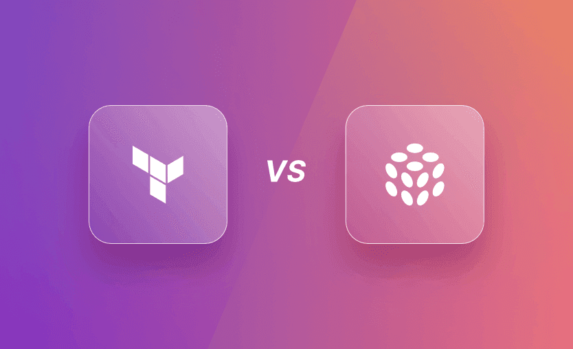

Terraform vs Pulumi
By Omar A. • April 14, 2026 • 6 min read

Introduction
As cloud infrastructure grows, manually creating virtual machines, storage, databases, and networking resources becomes time-consuming and error-prone. Infrastructure as Code (IaC) solves this problem by allowing developers to define infrastructure using code. Two of the most popular IaC tools today are Terraform and Pulumi.
What is Terraform?
Terraform, developed by HashiCorp, is one of the most widely used Infrastructure as Code tools. It uses a simple language called HCL (HashiCorp Configuration Language) to define cloud resources. Terraform supports AWS, Azure, Google Cloud, Kubernetes, VMware, and hundreds of other providers.
What is Pulumi?
Pulumi is a modern Infrastructure as Code platform that allows developers to create cloud infrastructure using programming languages such as JavaScript, TypeScript, Python, Go, Java, and C#. Instead of learning a new language, developers can use languages they already know.
Key Differences
Terraform uses HCL, making configuration files easy to read and share across teams. Pulumi, on the other hand, provides greater flexibility because it uses full programming languages that support loops, functions, variables, and object- oriented programming concepts.
Terraform has a larger community, extensive documentation, and thousands of reusable modules. Pulumi is newer but is becoming increasingly popular among software developers who prefer writing infrastructure using familiar programming languages.
Which One Should Students Learn?
Beginners entering Cloud Engineering or DevOps should start with Terraform because it is the industry standard and is widely used by organizations around the world. After understanding Infrastructure as Code concepts, learning Pulumi becomes much easier and provides additional flexibility for larger projects.
"Infrastructure should be automated just like application code."
Conclusion
Both Terraform and Pulumi are excellent tools for automating cloud infrastructure. Terraform is the best starting point for beginners due to its large ecosystem and industry adoption, while Pulumi offers modern programming capabilities for developers who prefer coding over configuration files. Learning either tool is a valuable investment for anyone pursuing a career in Cloud Computing or DevOps.
← Back to Blog